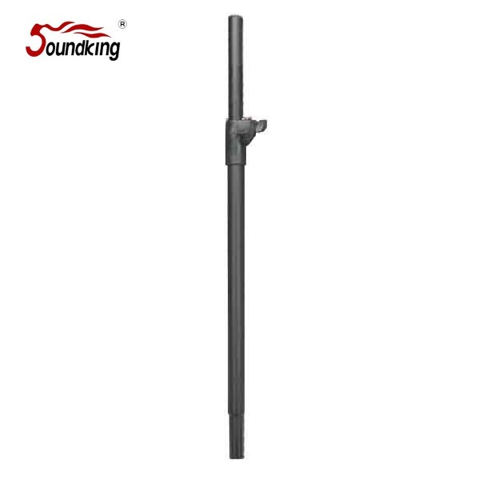

Soundking DB023은 35 mm 직경 어댑터를 베이스에 탑재한 풀마운트(Pole Mount) 타입의 스피커 스탠드입니다. 안전 핀 락(Safety Pin Lock)으로 높이 조절 후에도 스피커가 임의로 내려오지 않으며, 800–1340 mm 범위에서 유연한 높이 조절이 가능합니다. 서브우퍼의 Ф35 폴마운트 소켓에 꽂아 서브-새틀라이트(SUB/TOP) 구성이나 베이스 플레이트와 결합해 폴마운트 스피커 세트를 구성하는 데 사용됩니다.

베이스에 35 mm 직경의 폴마운트 어댑터를 적용한 스피커 스탠드. 서브우퍼 상부의 Ф35 소켓이나 Ф35 베이스 플레이트에 꽂아 TOP 스피커를 들어 올리는 용도로 사용되며, 안전 핀 락으로 높이 조절 후 안정적인 고정을 보장합니다.
DB023은 단독 트라이포드가 아닌, Ф35 폴마운트 소켓에 꽂아 사용하는 스피커 스탠드입니다. 대부분의 액티브 서브우퍼 상부에 있는 35 mm 표준 폴마운트 구멍에 바로 결합되어, 서브우퍼-새틀라이트(SUB/TOP) 구성이나 베이스 플레이트를 활용한 폴마운트 세트를 손쉽게 구축할 수 있습니다.
스탠드 상단에는 스피커의 임의 하강을 방지하는 안전 핀 락(Safety Pin Lock)이 있어, 높이 조절 후에도 TOP 스피커가 내려오지 않고 설정한 위치를 유지합니다. 800 mm에서 1340 mm까지 연속 높이 조절이 가능하여 객석 시야각과 음향 커버리지에 맞춰 TOP 스피커의 축을 정밀하게 세팅할 수 있습니다. 50 kg의 높은 허용 하중으로 중형 액티브 모니터까지 지지합니다.
제조사 공식 카탈로그가 기재하는 DB023의 핵심 포인트입니다.
제조사 공식 카탈로그(2026년 1월판) 기재 사양입니다.
| 모델명 | DB023 (카탈로그 표기: DB023B) |
|---|---|
| 타입 | Pole Mount Speaker Stand (Ф35 Adapter) |
| Height | 800 – 1340 mm |
| Load Capacity | 50 kg |
| Material | Steel |
| Base Adapter | Ф35 mm (표준 폴마운트) |
| Safety | Safety Pin Lock (안전 핀 락) |
| Net Weight | 1.5 kg |
| Inner Carton | 100 × 60 × 810 mm (1 pc) |
| Outer Carton | 320 × 220 × 830 mm (10 pcs / 5 조 1 박스) |
| 권장소비자가 | 44,000 원 / 조 (VAT 포함) |
※ 본 사양은 제조사 Soundking 공식 카탈로그(2026-01-29) 기재 사항을 기준으로 정리되었습니다. 단가는 2026-01-01 스탠드 가격표 기준 권장소비자가(VAT 포함)입니다.
서브-새틀라이트 구성, 베이스 플레이트 세트 등 Ф35 폴마운트 시스템에 적합합니다.